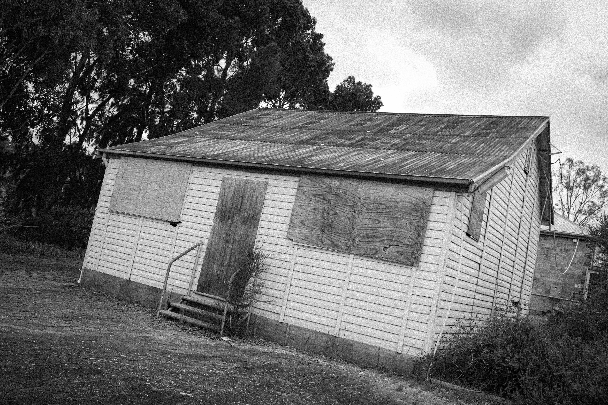

Situated in the Adelaide hills, the old Houghton Primary School, which opened in 1878 to cater to the growing local community. Over time, the school expanded, with several classrooms and sheds being constructed. The primary school closed down in 2014 due to declining student numbers, with the preschool remaining open until 2022. (Brown 2025)

I have been an urban explorer for a couple of years now, visiting over 50 abandoned buildings around Adelaide. I’ve always enjoyed taking photos of the places I’ve visited, so I thought it would be a good idea to challenge myself a bit more and to try using some more advanced photography techniques to see what I could do.
I saw videos of the primary school posted online by an online urbex account behind the boards. I then did my own research to find the location and discovered that it was listed as an historic place on Google Maps. I saw videos of people walking their dogs there, making me realise the place would be perfect for a school assignment, as it isn’t the type of place I’d get in lots of trouble for if I got caught going in there compared to other abandoned buildings.